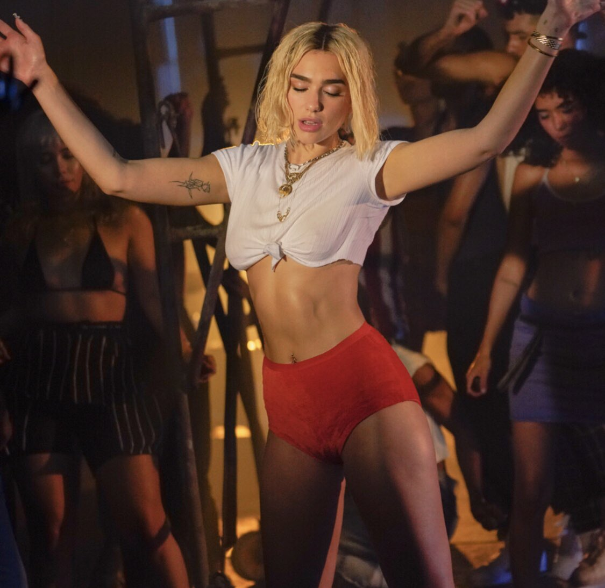

Dua Lipa
Dua Lipa (Londres, Inglaterra, 22 de agosto de 1995) es una cantante, compositora y modelo británica de origen albanokosovar.Su carrera musical se inició a los 14 años, cuando comenzó a versionar canciones de otros artistas en YouTube. En 2015 firmó con la discográfica Warner Music Group y a los 20 años lanzó su primer sencillo "Be the One"
En enero de 2017 Lipa ganó el premio a la elección pública EBBA.1 Su homónimo álbum de estudio debut se lanzó el 2 de junio de 2017. El álbum generó siete sencillos, incluidos dos top 10 del Reino Unido "Be the One" y "IDGAF" y el sencillo número uno del Reino Unido "New Rules", que también alcanzó el número seis en los Estados Unidos. En febrero de 2018, Lipa ganó dos premios Brit por la solista británica y a la mayor irrupción musical británica. En abril, el sencillo "One Kiss" de Lipa y Calvin Harris alcanzó el número uno en el UK Singles Chart. En febrero del 2019, fue galardonada como «mejor nuevo artista» por los Premios Grammy, y su colaboración en «Electricity» con Mark Ronson y Dj Diplo recibió el galardón de «mejor grabación de Dance».